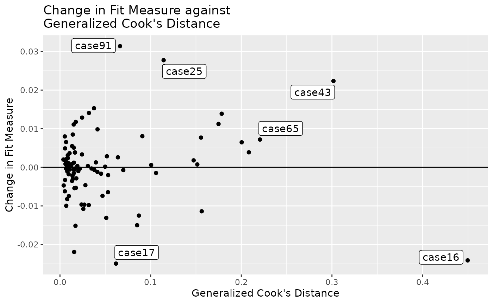
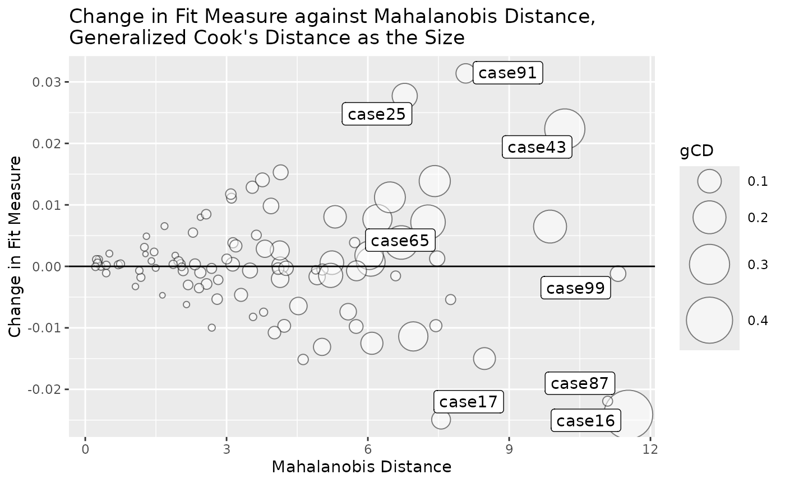

Instead of using row numbers (case.idx in the lavaan object), semfindr::lavaan_rerun() supports user supplied case IDs. This can make the output more readable.
library(semfindr)
dat <- pa_dat
# Add case id
dat <- cbind(id = paste0("case", seq_len(nrow(dat))), dat)
head(dat)
#> id m1 dv iv1 iv2
#> 1 case1 0.32067106 1.4587148 0.2055776 -0.42187811
#> 2 case2 0.15360231 -0.3809220 0.1853543 0.15229953
#> 3 case3 0.35136439 -0.4886773 0.9151424 1.16670950
#> 4 case4 -0.56529330 -0.9766142 0.2884440 0.04563409
#> 5 case5 -1.60657017 -1.0948066 -0.5756171 -0.18184854
#> 6 case6 0.03143301 0.5859886 0.1420111 0.06286986Suppose that the data set has a column of case IDs. A model is fitted to this data set using lavaan::sem():
mod <-
"
m1 ~ iv1 + iv2
dv ~ m1
"
library(lavaan)
#> This is lavaan 0.6-9
#> lavaan is FREE software! Please report any bugs.
fit <- sem(mod, dat)Rerun n Times
We refit the model 100 times, each time with one case removed. Although the id column is not stored in lavaan, it can be supplied through the argument case_id:
fit_rerun <- lavaan_rerun(fit, case_id = dat$id)The list of reruns now use id as the names:
head(fit_rerun$rerun[1:3])
#> $case1
#> lavaan 0.6-9 ended normally after 11 iterations
#>
#> Estimator ML
#> Optimization method NLMINB
#> Number of model parameters 5
#>
#> Number of observations 99
#>
#> Model Test User Model:
#>
#> Test statistic 6.557
#> Degrees of freedom 2
#> P-value (Chi-square) 0.038
#>
#> $case2
#> lavaan 0.6-9 ended normally after 11 iterations
#>
#> Estimator ML
#> Optimization method NLMINB
#> Number of model parameters 5
#>
#> Number of observations 99
#>
#> Model Test User Model:
#>
#> Test statistic 6.731
#> Degrees of freedom 2
#> P-value (Chi-square) 0.035
#>
#> $case3
#> lavaan 0.6-9 ended normally after 11 iterations
#>
#> Estimator ML
#> Optimization method NLMINB
#> Number of model parameters 5
#>
#> Number of observations 99
#>
#> Model Test User Model:
#>
#> Test statistic 7.128
#> Degrees of freedom 2
#> P-value (Chi-square) 0.028As shown below, most diagnostic functions will use user supplied case IDs in their displays, making it easier to locate them in the original data set.
Diagnostic Functions
Standardized Changes in Estimates
fit_est_change <- est_change(fit_rerun)
round(head(fit_est_change), 3)
#> m1~iv1 m1~iv2 dv~m1 m1~~m1 dv~~dv gcd
#> case1 0.024 -0.030 0.052 -0.037 0.017 0.006
#> case2 0.007 0.003 -0.013 -0.067 -0.058 0.008
#> case3 -0.038 -0.040 -0.030 -0.063 -0.045 0.010
#> case4 -0.024 -0.003 0.022 -0.051 -0.044 0.006
#> case5 0.067 0.028 0.033 0.050 -0.066 0.013
#> case6 0.004 0.001 0.010 -0.069 -0.054 0.008
fit_est_change_paths_only <- est_change(fit_rerun,
parameters = c("m1 ~ iv1",
"m1 ~ iv2",
"dv ~ m1"))
round(fit_est_change_paths_only[1:5, ], 3)
#> m1~iv1 m1~iv2 dv~m1 gcd
#> case1 0.024 -0.030 0.052 0.004
#> case2 0.007 0.003 -0.013 0.000
#> case3 -0.038 -0.040 -0.030 0.004
#> case4 -0.024 -0.003 0.022 0.001
#> case5 0.067 0.028 0.033 0.006Raw Changes in Estimates
fit_est_change_raw <- est_change_raw(fit_rerun)
round(fit_est_change_raw[1:5, ], 3)
#> m1~iv1 m1~iv2 dv~m1 m1~~m1 dv~~dv
#> case1 0.003 -0.003 0.005 -0.005 0.003
#> case2 0.001 0.000 -0.001 -0.009 -0.011
#> case3 -0.004 -0.004 -0.003 -0.008 -0.008
#> case4 -0.003 0.000 0.002 -0.007 -0.008
#> case5 0.007 0.003 0.004 0.006 -0.013Mahalanobis Distance
fit_md <- mahalanobis_rerun(fit_rerun)
round(fit_md[1:5, , drop = FALSE], 3)
#> md
#> case1 1.911
#> case2 0.444
#> case3 3.787
#> case4 1.065
#> case5 1.980Changes in Fit Measures
fit_mc <- fit_measures_change(fit_rerun,
fit_measures = c("chisq", "cfi", "tli", "rmsea"))
round(fit_mc[1:5, ], 3)
#> chisq cfi tli rmsea
#> case1 0.154 -0.002 -0.005 0.002
#> case2 -0.019 0.001 0.003 -0.001
#> case3 -0.417 0.008 0.021 -0.007
#> case4 -0.154 0.004 0.009 -0.003
#> case5 0.097 0.000 0.001 0.001All-In-One-Function
fit_influence <- influence_stat(fit_rerun)
round(fit_influence[1:5, ], 3)
#> chisq cfi rmsea tli m1~iv1 m1~iv2 dv~m1 m1~~m1 dv~~dv gcd
#> case1 0.154 -0.002 0.002 -0.005 0.024 -0.030 0.052 -0.037 0.017 0.006
#> case2 -0.019 0.001 -0.001 0.003 0.007 0.003 -0.013 -0.067 -0.058 0.008
#> case3 -0.417 0.008 -0.007 0.021 -0.038 -0.040 -0.030 -0.063 -0.045 0.010
#> case4 -0.154 0.004 -0.003 0.009 -0.024 -0.003 0.022 -0.051 -0.044 0.006
#> case5 0.097 0.000 0.001 0.001 0.067 0.028 0.033 0.050 -0.066 0.013
#> md
#> case1 1.911
#> case2 0.444
#> case3 3.787
#> case4 1.065
#> case5 1.980Diagnostic Plots

Fit Measure vs. Generalized Cook’s Distance
gcd_gof_plot(fit_influence,
fit_measure = "rmsea",
largest_gcd = 3,
largest_fit_measure = 3)
Bubble Plot
gcd_gof_md_plot(fit_influence,
fit_measure = "rmsea",
largest_gcd = 3,
largest_fit_measure = 3,
largest_md = 3,
circle_size = 15)